確認済み機能 28 / 38
01
入力補助
ID自動採番
自動での色付け 無
REFコード.js: 3-2

入力時・自動
- B〜K列のいずれかに入力があり A列が空の行に、V-XXXX 形式（4桁連番）の IDを自動採番
- ScriptLock（ScriptApp.getLockService().getScriptLock()）による排他制御。複数端末・担当者が同時入力しても番号は重複しない
一括補完関数
- 採番漏れは
fillMissingIdsAndCars()が一括処理。A列が空の行を全件スキャンして採番→マスタ補完まで実行
02
入力補助
トン数正規化
自動での色付け 無
REFコード.js: 3-2

入力時・自動
- D列（トン数）編集時に
normalizeTons_()を呼び出し、「4t」「4T」「4トン」「4.0t」「4.0」等を数値 4 に変換 - onEdit トリガー内で即時処理（GAS実行遅延の影響を受けない同期処理）
- CSV取込や多行貼り付けも対象。変換後にセルを上書き
03
入力補助
車番自動補完
自動での色付け 無
REFコード.js: 3-2

入力時・自動
- F列（車番）入力時、全角英数→半角変換後に自車専属マスタと照合し B〜I列（区分・会社名・トン数・車種・車番・乗務員名・携帯番号・看板名）を一括補完
- 照合は数字部分の完全一致方式。「101」→「大阪か101」にヒット。「1」は「101」にヒットしない
- 複数行への一括貼り付け・Ctrl+Enter 一括入力にも対応
スキップ条件
- B〜I列（F列以外）に 1つでも入力済みの行は補完しない（協力会社の同じ車番も手入力可能）
- マスタB列（運行状態）が「故障」「待機」の車両はスキップ
一括補完関数
fillMissingIdsAndCars()で補完漏れを一括修正
04
入力補助
車種 全角→半角・大文字統一変換
自動での色付け 無
REFコード.js: 3-2

入力時・自動
- E列（車種）の直接編集時に即時変換、F列（車番）補完ループ終了後にも一括変換
- 全角アルファベット（Ａ-Ｚ, ａ-ｚ）→半角変換 → さらに大文字に統一してセルに書き戻す
- F列補完経由でE列に書き込まれたマスタ値も対象（補完後に全行スキャン方式）
05
入力補助
車番 全角→半角自動変換
自動での色付け 無
REFコード.js: 3-2

入力時・自動
- F列（車番）編集時、全角英数を半角変換してセルに書き戻す
- マスタ側の車番が全角でも同様に正規化して照合。数字部分の完全一致で判定
- 補完時もマスタ値を半角正規化した値で F列上書き
06
入力補助
日付への現在時刻付与
自動での色付け 無
REFコード.js: 3-2

入力時・自動
- J列（日付）編集時、全角・スペース混じりの文字列（「７/２６」「7 / 26」等）を半角正規化し今年の日付として保存
- SS上の表示は日付のみ（yyyy/MM/dd）。内部には現在時刻が付与されて保存される
- 時刻なし（00:00:00）で保存されている場合も現在時刻を付与して上書き
- アプリの一覧では日付＋時刻（例：7/26 14:35）で表示される
07
入力補助
時刻の正規化と日付合成
自動での色付け 無
REFコード.js: 3-2

入力時・自動
- 対象列：N〜R列（誘導・積完・休憩開始・休憩終了・降完）＋ 点呼前後完了列。編集時に即時処理
- 全角コロン「：」・全角数字（１２：３０等）→ 半角変換
- 時刻のみ入力（HH:mm）→ J列の日付と合成して DateTime 型で保存
- GASの内部時刻型（1899年起点）で届いた値も J列日付と合成して正しく保存
- 月日付き入力（M/d H:mm）はそちらを優先
変換しない条件
- 「19：40ｌ」のように数字以外の文字が含まれている場合は変換せず、そのまま保存
08
自動計算
書式自動設定
自動での色付け 無
REFコード.js: 3-2

入力時・自動
- S〜V列（売上・請求高速・実費高速・合計高速）に
#,##0;[RED]#,##0を自動適用 - N〜R列・点呼前後列に
M/d HH:mmの時刻書式を自動適用 - 対象列を含む範囲が編集されたとき崩れた書式を自動修復（onEdit 内）
09
自動計算
請求高速 → 実費高速 コピー
自動での色付け
REFコード.js: 3-2

入力時・自動
- T列（請求高速, col20）入力時、U列（実費高速, col21）が空ならフォント
#E65100（オレンジ）で同値をコピー - U列（editedCol===21）編集時：値が空 → T列を再コピー（オレンジ）、値あり → フォントを
null（黒）に戻す
運用ルール（コメント必須）
- 実費が本当に0円の場合は「0」を明示入力すること。空欄は「未入力」として扱われ T列の値が再コピーされる
10
自動計算
合計高速代 数式自動セット
自動での色付け 無
REFコード.js: 3-2

入力時・自動
- T列またはU列の編集時、V列（col22）に数式がなければ
=IF(T{r}=U{r},"",T{r}-U{r})を自動セット - 書式：
#,##0;[RED]#,##0。プラス=黒字、マイナス=赤字
保護・自動復元
- V列を直接編集（Delete含む）すると即座に数式を復元し「合計高速は自動計算列です」トーストを表示して return
11
自動計算
日付変更時の自動ソート
自動での色付け 無
REFコード.js: 3-2, 1-10

入力時・自動
- J列（col10）の編集時に
sortUnkouByDate_()とsortSummaryByDate_()を呼び出し、運行シートと集計表の両方を日付昇順→乗務員名昇順で強制ソートする - ソート前に背景色・リッチテキスト値（col24・col26）を一括取得し、ソート後の行順で復元
- ソート後 V列の数式を全行
=IF(T=U,"",T-U)で再セット。数値書式・日付書式も再適用
手動実行
- 基本はJ列▼フィルタ → 昇順で並べ替え。日付が正しく並ばない場合は下記メニューから実行
sortBothSheetsByDate()— 📋 毎日の配車業務 → 🔃 日付順並び替え
12
警告・保護
時刻入力の順序チェック
自動での色付け 無
REFコード.js: 3-2（onEditUnkou_ L1806〜1821）


入力時・自動
- N〜R列（誘導col14・積完col15・休憩開始col16・休憩終了col17・降完col18）の入力順序をonEdit内で強制
- 前の列が空のまま次の列を入力しようとすると
timeCell.clearContent()でキャンセルしてトースト警告を表示 - 点呼前完了（_inspBColNum）・点呼後完了（_inspAColNum）が設定されている場合は同じ連鎖に組み込まれる
実装パターン
gapMsgをセット →clearContent()→toast(gapMsg, '⛔ 順序エラー', 4)→continueSpreadsheetApp.getActiveSpreadsheet().toast()（onEdit内のため ActiveSpreadsheet 使用可）
① 誘導(N)が空のままR列（降完）を入力しようとした場合
② 誘導(N)が空のままO列（積完）を入力しようとした場合
③ 全列を順序通りに入力した状態
13
警告・保護
資格期限の警告ポップアップ（SS起動時）
自動での色付け 無
REFコード.js: 1-7c（showExpiryAlert L14274〜14333）

SS起動時・自動
- 免許証有効期限が60日以内、安全教育・健康診断・適性診断の次回予定日が30日以内の乗務員がいると、SS起動時にポップアップで一覧を表示する
- 期限超過は「期限切れ」、期限内は「まもなく期限」として区別して表示する
CacheService+LockService.getDocumentLock()+PropertiesService（EXPIRY_POPUP_TS）の2段階で30秒デバウンス（多重起動ブロック）- ゾンビトリガー対策:
checkMasterExpiries(e)/checkExpiryDates(e)はreturn;のみの空デコイ
実装パターン
- 自車専属マスタの4期限列を
headers.indexOfで特定 →warnings[]に収集 →SpreadsheetApp.getUi().alert()でモーダル表示
14
警告・保護
ID重複・車番不一致の警告
自動での色付け
REFコード.js: 1-7b（markIdCollisions_ L698〜747）


SS起動時・onEdit・自動
- 同じIDで車番（F列=col6）または日付（J列=col10）が2種類以上ある行を衝突と判定し、A列を
#ff1744（濃い赤）でマーク - 衝突が解消された行はA列の色を
nullに戻す
実装パターン
idMapに車番・日付を収集 →Object.keys().length > 1で衝突判定 →setBackgrounds()で一括更新
① 同じIDが2行入力された状態
② IDを別々に修正した状態
15
警告・保護
ヘッダー行の自動復元
自動での色付け 無
REFコード.js: onChange L10803〜10815 / dispatchStructureChange L3858〜3881 / getSheetHeaderDef_ L3706〜3716


onEdit・onChange・自動
- 1行目（row===1）が編集されると
getSheetHeaderDef_で正規ヘッダー配列を取得しsetValues([canonHdr])で即時上書き復元 - 列の削除・並び替えなどの構造変更は
dispatchStructureChangeで検知し、正規列順に修復後ss.toast('列構成を元に戻しました')を表示 - 定義済みシート：運行・集計表・自車専属マスタ・自車専属運行・マスタ・設定
① 正常な状態
② 1行目のセルを削除した状態
③ 「列構成を元に戻しました」のポップアップが表示
④ 自動でヘッダーが復元された状態
手動フォールバック（自動復元が効かなかった場合）
- メニュー「システム設定・保守」→「🔑 ヘッダー復旧＋保護」→
restoreHeaders()を呼び出し - 全対象シートをループし
getSheetHeaderDef_の正規配列でsetValues後、シート保護（ヘッダー行保護）を再設定 - 列数が足りない場合は
insertColumnsAfterで補ってから復元
16
有休行の色付け
自動での色付け
REFコード.js: 3-2, 1-7

入力時・自動
- L列（積地）に「有休」を含む値を入力すると行全体が薄グレー（#e0e0e0）に即時着色される
SS起動時・自動
- SS開き直し（F5）のたびに全行を再チェックして自動再適用される
優先順位
- 有休行のグレーは資格期限アラートの色（赤・青・緑）より優先される。期限色はグレー行には上書きされない
17
休み行の色付け
自動での色付け
REFコード.js: 3-2, 1-7
入力時・自動
- L列（積地）に「休み」を含む値を入力すると行全体が濃グレー（#9e9e9e）に即時着色される
SS起動時・自動
- SS開き直し（F5）のたびに全行を再チェックして自動再適用される
優先順位
- 休み行のグレーは資格期限アラートの色（赤・青・緑）より優先される。期限色はグレー行には上書きされない
18
配車漏れ警告色
自動での色付け
REFコード.js: 1-7

入力時・自動
- L列（積地）が空でA列（ID）がある行のL列が薄黄（#fff9c4）で着色される
- L列に積地を入力すると即時に薄黄が解除される
- 積地を削除すると薄黄が再適用される
SS起動時・自動
- SS開き直し（F5）のたびに全行を再チェックして自動再適用される
優先順位
- 有休・休み行（グレー行）には薄黄は上書きされない
19
保護列の色（薄青グレー）
自動での色付け
REFコード.js: 3-2, 1-7


入力時・自動
- onEdit で V列（col22）・Y列（col25）・Z列（col26）のIDが空でない行に
#eceff1（薄青グレー）を setBackground する - 有休・休みのグレー行や期限アラート色より低優先（上書きされない）
SS起動時・自動
- onOpen（F5）で全行再チェックし、IDがある行の3列に一括再適用される
① 標準の状態
② 誤って入力した場合
③ 次の編集・F5 後に薄青グレーが復元
20
資格期限アラート色（A列）
自動での色付け
REFコード.js: 1-7c


処理概要（コード.js: 1-7c）
- 関数: applyExpiryWarningColors_(ss, sheet)
- 起動経路: onOpen → checkMasterExpiries_ → 本関数。LockService（DocumentLock）+ PropertiesService（EXPIRY_POPUP_TS）で30秒デバウンスによる多重起動ガード済み
- expiryMap構築: 自車専属マスタのAH〜AK列（免許証・安全教育・健康診断・適性診断）を全行一括読み込み。乗務員名をキーに4列の最小残日数を値として格納
- A列着色ロジック: d < 0 → #ffcdd2（赤・期限切れ）/ d === 0 → #bbdefb（青・当日）/ d ≤ 7 → #c8e6c9（緑・7日以内）/ それ以外は現色を維持
色の意味（ID欄 A列）
- ① 淡い赤：いずれかの資格期限が過ぎている
- ② 淡い青：いずれかの資格期限が今日
- ③ 淡い緑：いずれかの資格期限が7日以内
- ④ 色なし（白）：4項目すべて余裕あり
💡 A1セルにカーソルを合わせると色の意味の一覧が表示されます
色が付かない場合
- ① 有休・休みの行（グレーの行）には色が付きません
- ② 区分欄が空の行（自社登録外の車両）には色が付きません
スキップ条件（変更禁止）
- skipSet: A列が #e0e0e0（有休グレー）/ #9e9e9e（休みグレー）/ #ff1744（ID衝突赤）の行はスキップ
- A列IDが空の行はスキップ
- B列（区分）が空の行はexpiryMap対象外として期限色をクリア
- 乗務員名がexpiryMapに存在しない行（マスタ未登録）は期限色をクリア
マスタ側の連動処理
- AH〜AK列の文字色: 期限切れ（d < 0）→ 赤文字（#d32f2f）/ 有効 → 黒文字（#212121）
- ヘッダー行の3分割着色: 経費列＝黒背景緑文字 / 期限列（AH〜AK）＝オレンジ背景白文字 / 担当管理者列＝ティール背景白文字
- A1・L1セルに setNote() で色の凡例メモを自動付与（onOpen時）
21
色凡例メモの自動設定
自動での色付け 無
REFコード.js: 1-7c L651 / L684 / L822〜833


SS起動時・自動（applyExpiryWarningColors_ / onOpen経由）
- 運行シート A1:
setNoteでID列・行全体の色の意味（7項目）を書き込む - 運行シート L1（積地ヘッダー）:
setNoteで薄黄（配車漏れ）の意味を書き込む - 自車専属マスタ B1:
setNoteで行色（赤=運行/緑=故障/薄黄=待機）の意味を書き込む - 毎回
setNoteを上書きするため、常に最新の説明が維持される
① 運行シート A1セル — ID列・行全体の色の意味
② 運行シート L1セル（積地） — 薄黄（配車漏れ）の意味
22
マスタ編集時連動
自動での色付け 無
REFコード.js: 3-3（onEditMasterVehicle_）/ 3-3b（syncVehicleToCurrentMonth_）

トリガー経路
- installedOnEdit_ → シート名が「自車専属マスタ」かつ B列（col=2）かつ row≥2 の場合に分岐
- HTMLダイアログ（いつから適用しますか？）を表示 → google.script.run.executeStatusSync で 3-3b を呼び出す
3-3b: syncVehicleToCurrentMonth_ のロジック
- applyDate（今日 / 月初 / 2000-01-01）以降の空行（荷主〜売上 K〜S列がすべて空）を運行シートから削除
- status === '運行' のとき：applyDate〜月末の各日に車番・区分・乗務員名等を埋めたプレースホルダー行を再生成しIDを採番
- 複数行同時編集対応（行番号を JSON 配列で渡す）。ただし運用上は1台ずつを推奨
▶ 待機 → 運行（行の追加）
- 「待機」を「運行」に変更しポップアップの該当ボタンを押すと、選択した日付以降の行が運行シートに自動で追加される
- 「待機」はトラックはあるが乗務員がいない場合や、乗務員の怪我等で長期休暇の際などに使用する
① 変更前（車番5678は運行シートに存在しない）
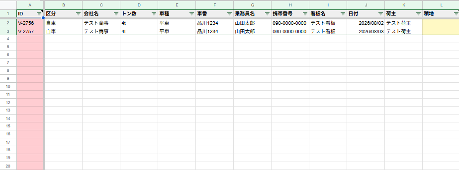
② 自車専属マスタのS-0002が待機の状態から運行に変更
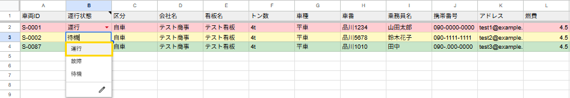
③ 「いつから適用しますか？」ポップアップ
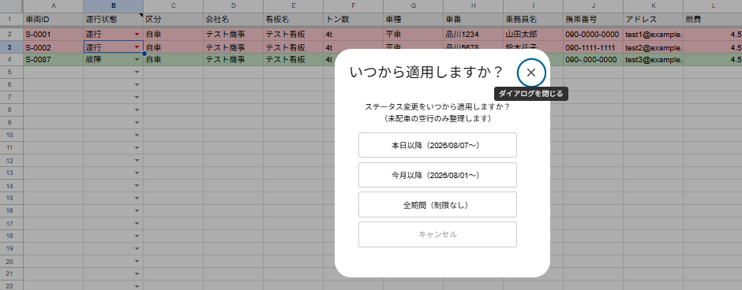
④ S-0002が運行に変わった
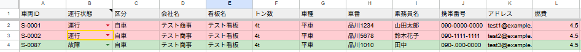
▶ 運行 → 待機 / 故障（行の削除）
- 配車が入っていない空の行（未配車行）のみ削除。配車済み行は一切削除されない
- 間違えた場合は同じ手順で「運行」に戻せば再追加できる
① 「運行状態」欄をクリックして変更
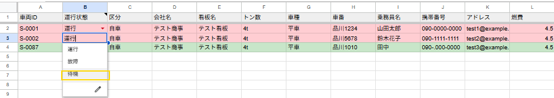
② 「いつから適用しますか？」ポップアップ
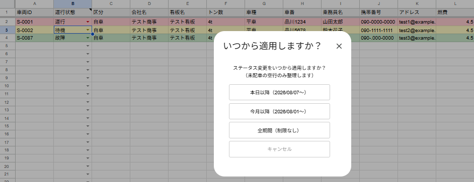
③ 変更後（待機に変わった）
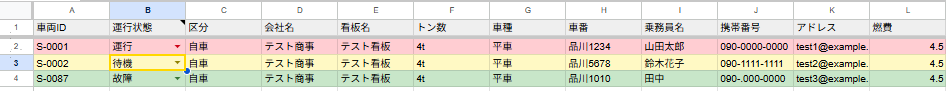
④ 運行シートから空の行が削除された
💡 ポップアップの選択肢（applyDate）
- 本日以降：today = 当日0:00:00 を起点
- 今月以降：month = 月初1日0:00:00 を起点
- 全期間（制限なし）：all = 2000-01-01 を起点（実質全件）
23
配車ダッシュボード
自動での色付け 無
REFコード.js: 2-5（showDispatchDashboard / getDispatchDashboardData）/ dispatchDashboard.html
💡 手動操作（メニュー）
- 「毎日の記帳業務」→「🚚 配車ダッシュボード」でサイドバーを表示
- getDispatchDashboardData()：本日分（J列＝today）の運行シートからL列（積地）が空欄の行のみを抽出して返す
- 配車漏れ件数（count）を大きく表示。0件なら「✅ 配車漏れなし」バナー
- setInterval(30000) による30秒自動更新。「🔄 更新」ボタンで手動更新
- 積地（L列）空欄行 = 配車漏れ警告色（薄黄 #fff9c4）が付いている行と同じ
① メニューから「配車ダッシュボード」を選択
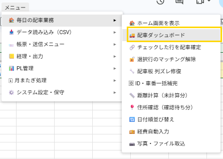
② 配車漏れなし（本日の積地未入力が0件）
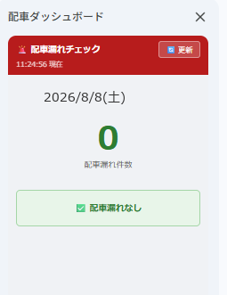
③ 配車漏れあり（積地が空欄の行が一覧表示）
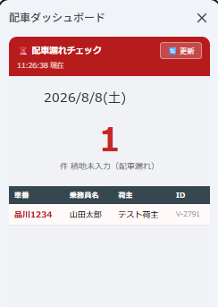
④ 運行シート：積地（L列）が空欄の行がダッシュボードに表示される（配車漏れ警告色の薄黄が付いている行と同じ）
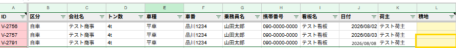
24
選択行の配車確定解除
自動での色付け 無
REF コード.js: 15-1b（cancelDispatch L12317〜12397）
💡 手動実行（メニュー「🔓 選択行の配車確定解除」）
- 実行シートを
getActiveSheet().getName()で判定。「配車板」または「運行」以外はエラー終了 - 配車板から実行：選択行の N列(col14=貨物登録ID) と AC列(col29=車両登録ID) を読み取り ids オブジェクトに格納
- 運行シートから実行：選択行の A列(col1=ID) を読み取り ids に格納
- 確認ダイアログ（ui.ButtonSet.YES_NO）でキャンセル可能。NO なら処理中断
- 運行シート：A列でIDマッチ行を後ろから
deleteRow（インデックスずれ防止のため逆順削除） - 集計表：同じくA列でIDマッチ行を逆順
deleteRow - 配車板リセット：N列(col14)またはAC列(col29)がIDと一致する行の進捗・背景色を
clearContent + setBackground(null)で初期化
① 配車板シート：配車確定済みの行（ピンク背景）
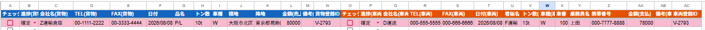
② 運行シートに自動登録されている
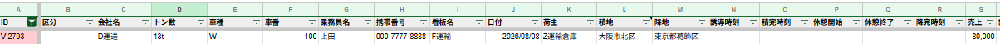
③ 運行シートで解除したい行のID列にセルを合わせる
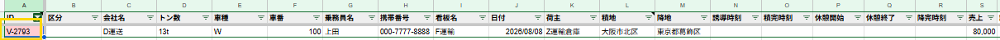
④ メニュー「選択行の配車確定解除」を選択
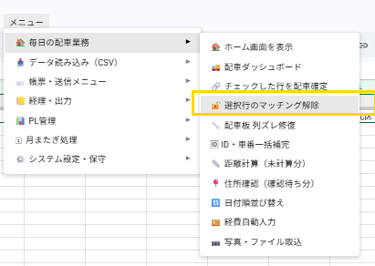
⑤ 内容を確認してOKを押す
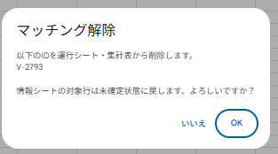
⑥ 運行シートから該当の配車行が削除される
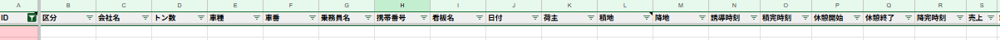
⑦ 配車板シートのIDが消え、背景色が白に戻る
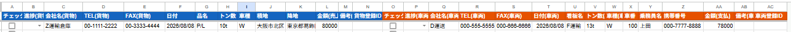
⚠️ 注意
- 解除すると運行シート・集計表から該当行が完全に削除される（元に戻せない）
- 配車板・運行シートどちらを選択中でも同じ操作で実行できる
25
ID・車番一括補完（手動）
自動での色付け 無
REF コード.js: 4-2b（fillMissingIdsAndCars L3557〜3657）
💡 手動実行（メニュー「🆔 ID・車番一括補完」）
- CSVインポートや複数行のコピー＆ペーストでデータを一括入力した後、IDや車番が入っていない行に対して使用する
- A列のIDが空でB〜K列にデータがある行にV-XXXXを一括採番、F列（車番）または乗務員名が空の行を自車専属マスタから一括補完し、集計表を全件再同期する
- A列空・B〜K列にデータあり → V-XXXX 形式で採番（LockService.getScriptLock で二重採番防止）
- F列(車番)またはG列(乗務員名)が空 → 自車専属マスタから補完（社外協力会社はマスタ外のため補完されない）
- 補完後は syncSummaryForId_ で集計表を再同期 → sortUnkouByDate_ でソート → applyHolidayRowColors_ で色付け
26
写真・ファイル取込
自動での色付け 無
REF コード.js: 2-4（showUploadSidebar L1428〜1484）・9-2c（uploadFileToRow L7183〜7200）
💡 手動実行（メニュー「📷 写真・ファイル取込」）
- showUploadSidebar: 運行シート限定。アクティブ行のA列IDを取得しサイドバーHTMLを生成してスプレッドシート右端に表示
- uploadFileToRow: google.script.run経由で呼び出し。DriveApp でファイルを保存し、X列(col24)のリッチテキストリンクを追記（重複URL自動除去）
- 対応ファイル: image/* / application/pdf / .doc .docx .xls .xlsx（最大20MB、超過はスキップ）
- 保存フォルダ: DriveApp.getRootFolder() 配下の「運行データ」フォルダ（なければ自動作成）
- フロントエンド（サイドバー）からのgoogle.script.run呼び出しのため、uploadFileToRow内でgetActiveSpreadsheet()を使用しているが、サイドバーはコンテナバインド環境内で動作するため問題なし
① 運行シートで対象の行にセルを合わせる
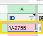
② メニュー「📷 写真・ファイル取込」をクリック
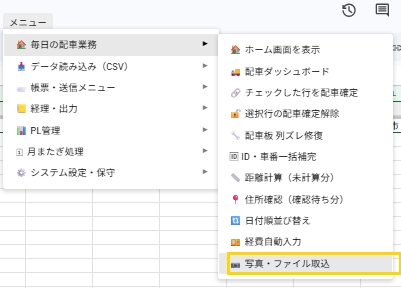
③ 画面右端にアップロードパネルが表示される
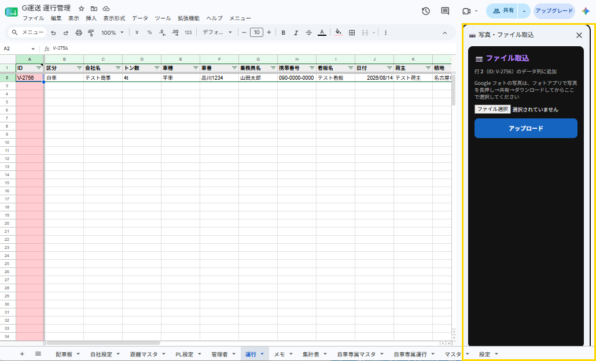
④ 「ファイル選択」をクリックしてファイルを選ぶ（複数選択可）
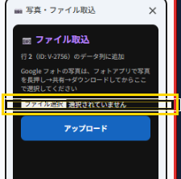
⑤ 「アップロード」をクリック
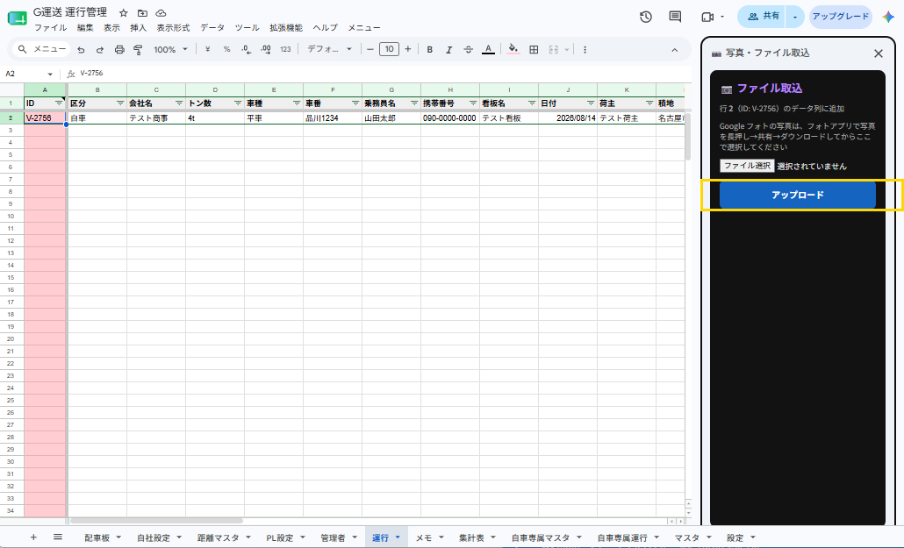
⑥ パネルを閉じても反映済み
- アップロード完了後はパネルをそのまま閉じてよい。DriveへのファイルSaveとX列への追記は完了している
⑦ 完了メッセージが表示される
⑧ 管理データ列の該当行にリンクが自動で追加される
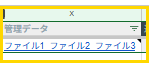
27
データ取込
運行シートCSV/Excel取込
自動での色付け 無
REF csvImport.html: 13-1〜13-8 / コード.js: importBulkRows（L12591）・doImportFromSheet_（L12349）・applyPasteImportMapping_（L12349〜）
💡 手動操作（メニュー）
- CSVやExcelのデータを運行シートに一括取込する機能
- 列の対応（マッピング）は自動設定。重複データは自動スキップ
① メニュー「データ読み込み（CSV）」→「運行シート」→「📋 貼付シート作成」を選ぶ
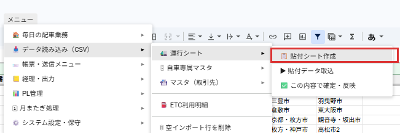
② 作られた取込シートにCSV/Excelデータを3行目以降に貼り付ける
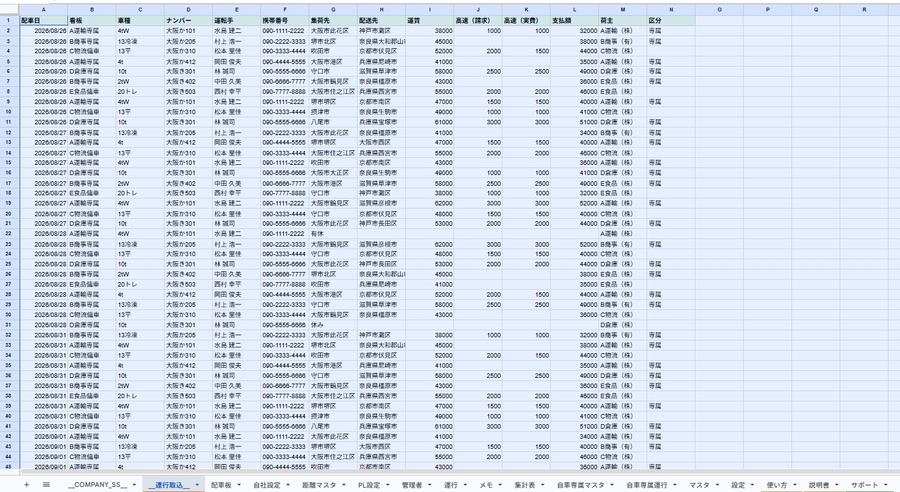
③ メニュー「▶ 貼付データ取込」を選ぶ
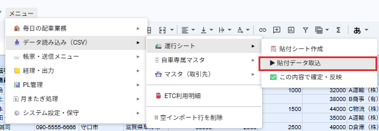
④ マッピング自動設定完了のアラートが表示される
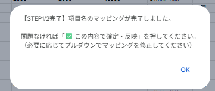
⑤ 2行目のプルダウンでマッピングを確認（通常は修正不要）
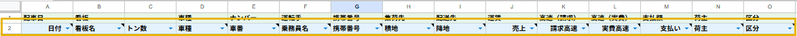
⑥ メニュー「✅ この内容で確定・反映」を選ぶ
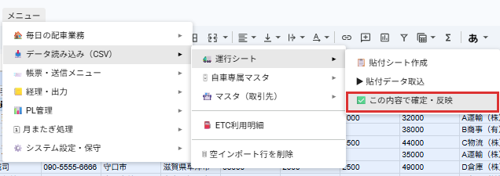
⑦ 取込完了アラートが表示される（反映件数・取込シート削除を通知）
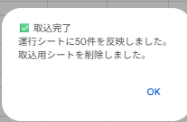
⑧ 取込データが運行シートに反映される
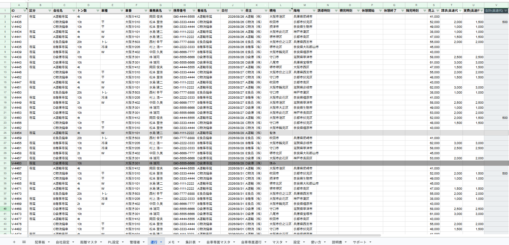
🔧 実装概要
- createPasteImportSheetUnkou → 取込用シート「__運行取込__」を生成（ヘッダー・マッピング行付き）
- executePasteImportUnkou → applyPasteImportMapping_でCSVヘッダーと内部fieldIdを自動照合してマッピング行に反映
- confirmPasteImport → doImportFromSheet_でマッピング行に従いimportBulkRowsを呼び出し。日付・車番・乗務員名・積地・降地・売上の複合キーで重複スキップ
- Excelエラー値（#N/A等）は自動スキップ。点呼前後完了（timePrevRoll・timePostRoll）も取込対象
- コード番号：csvImport.html 13-1〜13-8 / コード.js 12591（importBulkRows）・12349（doImportFromSheet_）
28
帳票・送信
発注書・指示書の作成・送信
自動での色付け 無
REF コード.js: 14-2c（showHatchuDocDialog L13811）・14-2e（getDocumentData_ L13841）・14-4（markDocumentIssued）・14-5（sendDocumentEmail L13237）
💡 手動操作（メニュー）
- 運行シートの行を選択して発注書・指示書を作成し、印刷・メール・FAX送信できる
- FAX送信は各会社のFAX機に接続して送信する（事前にFAX番号の登録が必要）
① 運行シートで対象行のIDセルをクリックして選択する
② メニュー「帳票・送信メニュー」→「① 発注書・指示書を作成（協力会社・乗務員用）」を選ぶ
③ 発注書・指示書のプレビューが開く。「印刷/PDF保存」「メール送信」「FAX送信」のいずれかを押す
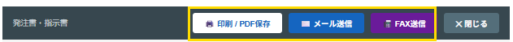
④ 「発注書・指示書を発行済にしました」のポップアップが表示される
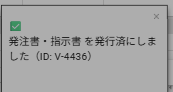
⑤ 運行シートの「発注書・指示書」列に送信日時が自動で記録される
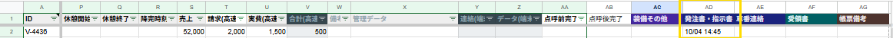
⑥ 指示先情報欄（空の状態）：会社名・電話番号・担当者名・住所が入力できる
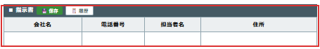
⑦ 指示先情報を入力した状態
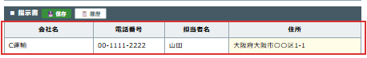
⑧ 「保存」ボタンで指示先が履歴シートに保存される（deleteShijisakiHistory / getShijisakiHistory / saveShijisakiHistory_ / コード.js: 14-6〜14-10）
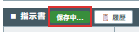
⑨ 「履歴」ボタンで過去の指示先一覧を表示。選択でフォームに自動入力
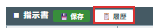
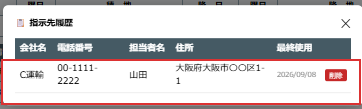
🔧 実装概要
- showHatchuDocDialog → getDocumentData_('sum')で運行シート・集計表・マスタからデータ取得しdocumentPreview.htmlをモーダル表示
- markDocumentIssued(rowId, docType, ssId) → openById(ssId)で運行シートの発行済み列を更新（ssId引数必須）
- sendDocumentEmail → docData.ssIdでopenById、GmailApp経由でメール・FAX送信
- コード番号：コード.js 14-2c, 14-2e, 14-4, 14-5
29
帳票・送信
車番連絡の作成・送信
自動での色付け 無
REF コード.js: 14-2d（showShabanDocDialog L13826）・14-2e（getDocumentData_ L13841）・14-4（markDocumentIssued）・14-5（sendDocumentEmail L13237）・14-11（getKyoryokuHistory）・14-12（saveKyoryokuHistory）・14-12i（saveKyoryokuHistory_）
💡 手動操作（メニュー）
- 運行シートの行を選択して車番連絡を作成し、印刷・メール・FAX送信できる
- FAX送信は各会社のFAX機に接続して送信する（事前にFAX番号の登録が必要）
① 運行シートで対象行のIDセルをクリックして選択する
② メニュー「帳票・送信メニュー」→「② 車番連絡を作成（荷主用）」を選ぶ
③ 車番連絡のプレビューが開く。「印刷/PDF保存」「メール送信」「FAX送信」のいずれかを押す
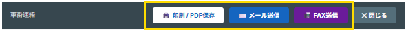
④ 「車番連絡を発行済にしました」のポップアップが表示される
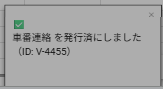
⑤ 運行シートの「車番連絡」列に送信日時が自動で記録される
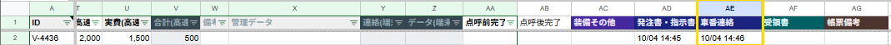
⑥ 車両・乗務員情報欄（空の状態）：看板名・車番・乗務員名・携帯番号が入力できる
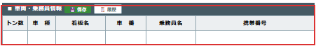
⑦ 看板名・車番・乗務員名・携帯番号を入力した状態
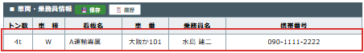
⑧ 「保存」ボタンで協力会社履歴シートに保存される（saveKyoryokuHistory / saveKyoryokuHistory_ / コード.js: 14-12, 14-12i）
⑨ 「履歴」ボタンで過去の協力会社一覧を表示。選択でフォームに自動入力（getKyoryokuHistory / コード.js: 14-11）
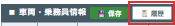
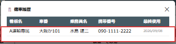
🔧 実装概要
- showShabanDocDialog → getDocumentData_('unkou')で運行シートからデータ取得しdocumentPreview.htmlをモーダル表示（金額は売上列）
- markDocumentIssued・sendDocumentEmailは28番（発注書）と共通の実装
- 協力会社履歴: getKyoryokuHistory(14-11)・saveKyoryokuHistory(14-12)・saveKyoryokuHistory_(14-12i)。隠しシート「協力会社履歴」に荷主名・看板名・車番・乗務員名・携帯番号・最終使用日を保存。documentPreview.htmlのshaban（車番連絡）ダイアログに💾保存・📋履歴ボタンを追加。印刷/メール/FAX送信時にも自動保存
- コード番号：コード.js 14-2d, 14-2e, 14-4, 14-5, 14-11, 14-12, 14-12i
30
帳票・送信
受領書の耳生成
自動での色付け 無
REF コード.js: 16-1（showUketorishoDialog L14178）・16-2（generateUketorishoSheet L14261）
💡 手動操作（メニュー）
- 運行シートのデータを絞り込んで受領書の耳（配送控えスリップ）を一括生成し、A4縦PDF印刷できる
- 荷主・会社名・日付・車番・乗務員名・積地・降地の7項目で絞り込み可能（空白=全件対象）
- 生成と同時に、対象行の運行シート「受領書」列に発行日時が自動で記録される
① メニュー「帳票・送信メニュー」→「🗒 受領書の耳生成」を選ぶ
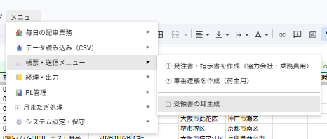
② 絞り込みポップアップが開く
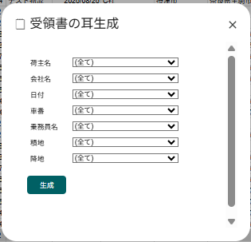
③ 絞り込み条件を選ぶ（空白=全件対象）
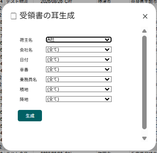
④ 「生成」を押す
⑤ 受領書_耳シートが生成される
💡 生成と同時に、運行シートの「受領書」列に発行日時が自動で記録される（MM/dd HH:mm形式・右詰め）
⑥ 「印刷用PDFを開く」を押す
⑦ A4縦のPDFが表示される。そのまま印刷できる
🔧 実装概要
- showUketorishoDialog（16-1）→ 運行シートから荷主・会社名・日付・車番・乗務員・積地・降地の選択肢を収集し、モーダルダイアログを表示
- generateUketorishoSheet（16-2）→ フィルタ条件に合う行を抽出・日付昇順ソート後、受領書_耳シートに3列×7行=21件/ページのレイアウトを生成。自社設定シートから自社名を取得して右下に表示
- 生成と同時に、対象行の運行シート「受領書」列にMM/dd HH:mm形式で発行日時を記録
- PDFリンク: A4縦（portrait=true）・fitw=true・余白5mm・グリッド線なし
31
帳票・送信
請求書生成
自動での色付け 無
REFコード.js: 16-3, 16-3b, 16-6
操作フロー
- メニュー「📒 経理・出力」→「🧾 請求書生成」→ ダイアログで顧客・期間・税率を選んで「生成」を押す
- 4つのドロップダウン（マスタID / 取引先名カナ / 会社名 / 電話）は連動。いずれか1つ選ぶと残り3つが自動同期される
- 期間の初期値は当月1日〜末日、消費税率の初期値は10%
- 完了後に「請求書」シートが生成される
① メニュー「📒 経理・出力」→「🧾 請求書生成」を選ぶ
② ダイアログが開く
③ 顧客・期間・消費税率を選ぶ
4つのドロップダウン（マスタID / 取引先名カナ / 会社名 / 電話）は連動。いずれか1つ選ぶと残り3つが自動同期される
4つのドロップダウン（マスタID / 取引先名カナ / 会社名 / 電話）は連動。いずれか1つ選ぶと残り3つが自動同期される
④ 「生成」ボタンを押す
⑤ 「請求書」シートが自動生成される
🔧 実装概要
- showInvoiceDialog（16-3）：マスタシートから顧客一覧を取得してインラインHTMLでモーダルダイアログを生成。google.script.run経由でgenerateInvoiceBatchを呼び出す
- generateInvoiceBatch（16-3b）：会社名リストを受け取り各社に対しgenerateInvoiceSheetを順次呼び出す
- generateInvoiceSheet（16-6）：SpreadsheetApp.getActiveSpreadsheet()でバインドSS取得（ライブラリ呼び出し時は呼び出し元SS文脈で動作）。明細行はsetValues/setBackgroundsでバッチ書き込みしAPIコール数を削減
- withFailureHandler：GASキャッシュ伝播遅延によるエラー発生時に「F5更新を促すメッセージ」をダイアログ上に表示（ユーザーがフリーズ中に気づけるよう対策済み）
32
帳票・出力
CSV・Excel出力
自動での色付け 無
REF コード.js: 17-6b（showExportDialog）・17-6b-1（exportSheetAsCsvBase64）・17-6b-2（exportSelectedSheetsAsExcel）
💡 手動操作（メニュー）
- 表示中シート（非表示シートは自動除外）の一覧をダイアログに表示。チェックで選択、全選択/全解除リンクあり
- 会計ソフトへの取込・バックアップなど用途によって必要なシートを選択してダウンロードしてください
① メニュー「📒 経理・出力」→「💾 CSV・Excel出力」を選ぶ
② ダイアログが開く
③ 出力したいシートにチェックを入れる
Excel出力
・「選択シートをExcel DL」ボタンを押す
・「生成中...（数秒かかります）」に変わる
・Excelファイルがダウンロードされる
CSV出力
・各シート行の「CSV」ボタンを押す
・「取得中...」に変わる
・CSVファイルがダウンロードされる（BOM付きUTF-8）
🔧 実装概要
- showExportDialog（17-6b）: ss.getSheets()で非表示除外後、ssIdをHTMLに埋め込みダイアログ表示
- exportSheetAsCsvBase64（17-6b-1）: 引数(ssId, sheetName)。openById→getValues→BOM付きUTF-8 CSV→base64Encode返却
- exportSelectedSheetsAsExcel（17-6b-2）: 引数(ssId, sheetNames)。一時SS作成→対象シートcopyTo→XLSX URL取得→base64→一時SSゴミ箱へ
- コード番号：コード.js 17-6b, 17-6b-1, 17-6b-2
33
今月分生成
自動での色付け 無
REFコード.js: 4-6b（generateCurrentMonth）
- 自車専属マスタの全行を走査し、運行状態（B列）が「運行」の車両をすべて抽出。区分による除外は行わない
- 運行シートの既存データから車番ごとに今月の最終生成日を
carLastDayMapに集計。F列（index5）=車番、J列（index9）=日付 lastGenDay >= daysInMonthの車両はスキップ。データなし（lastGenDay === 0）は1日から、途中まで済の車両は翌日から生成開始- 全車両が月末まで生成済みの場合のみ早期 return でブロック
自車専属マスタ列定義（veh配列・0-based）
- veh[0]=車両ID, veh[1]=運行状態, veh[2]=区分, veh[7]=車番
- 区分「自車」が対象。「専属」は除外（コード内:
if (veh[2] === '専属') continue;）
メニュー「🗓 月次処理」→「📅 今月分生成」
完了ポップアップ（生成月・行数を表示）
運行シート — 今月1日から本日までの行が追加されている
34
翌月分生成
自動での色付け 無
REFコード.js: 4-7（generateNextMonth）・16582（setupMonthlyTrigger・generateNextMonthSilent_）
- 毎月20日 0:00 に時間起動トリガー（
setupMonthlyTriggerで登録）が全客SSに対してgenerateNextMonthSilent_を呼び出して自動実行 - 手動メニューから呼ぶ場合は
generateNextMonth（UI あり版）。内部ロジックは共通 - 自車専属マスタのB列（運行状態）=「運行」の車両を抽出し、来月1日〜月末分の行を運行シートに一括 appendRow
- 実行後に
archiveOldestMonthIfNeeded_を呼び出して前月分を別SSにアーカイブ保存
メニュー「🗓 月次処理」→「📅 翌月分生成（前月アーカイブ）」
完了ポップアップ（生成月・台数・行数を表示）
運行シート — 翌月分の行が追加された状態
アーカイブSS（前月分）が自動作成される
アーカイブSSは「運行」「集計表」の2シートのみを格納
35
前月分アーカイブ
自動での色付け 無
💡 REF: コード.js 4-8（5449行）archiveOldMonth() / 4-8b（5551行）archiveMonthData_()
- メニュー登録: コード.js 1157行 / 1284行「📦 前月分アーカイブ」→ archiveOldMonth()
- 今月より前の全月を古い月順に archiveMonthData_() で1月ずつ処理する
- 保存先: Googleドライブ「運行管理_アーカイブ/会社名/YYYY年MM月_会社名」（SpreadsheetApp.create → Drive API でフォルダ移動）
- アーカイブ後は元の運行シートから該当行を削除（値のみコピー＋削除）
- 自車専属マスタ J列（メールアドレス）の全員に編集権限を付与
- 翌月分生成（34番 generateNextMonthSilent_）から自動呼び出しされる
【現在の状態】運行シートに前月分データが残っている
① メニュー「🗓 月次処理」→「📦 前月分アーカイブ」を選ぶ
② 完了ポップアップが表示される（archiveOldMonth() の ui.alert）
③ 運行シートから前月分が削除され、当月以降のデータのみになる
④ DriveにアーカイブSSが作成されている
⑤ 開くと「運行」「集計表」の2シートのみが保存されている
⚠️ 注意
- 今月より前のデータが全件対象（複数月まとめてアーカイブ可）
- アーカイブ後は元の運行シートからそのデータは削除される
- 翌月分生成（34番）と同時に自動実行されるため、通常は手動操作不要
36
シート再生成
自動での色付け 無
未チェック — バグチェック・HP化はまだ実施されていません
37
シート管理
ヘッダー復旧＋保護
自動での色付け 無
未チェック — バグチェック・HP化はまだ実施されていません